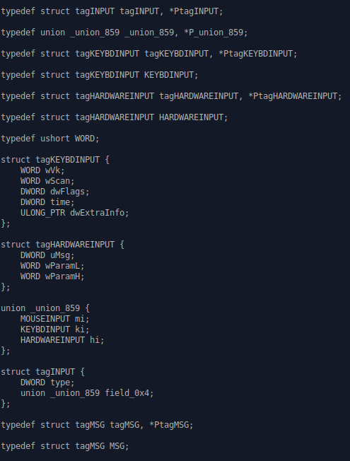
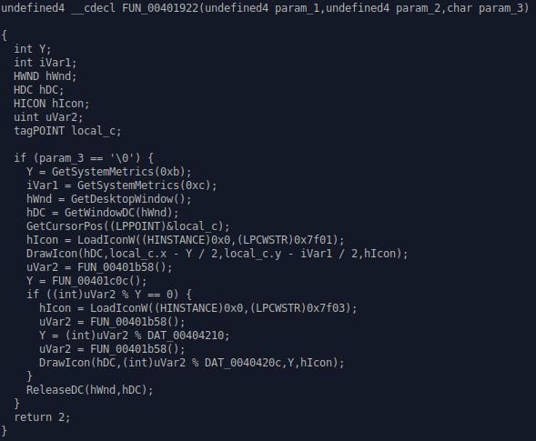

CinCan Malware Analysis – Workshop and My Own Findings
The purpose of
this report is to describe what I learned during the workshop by Kimmo Linnavuo
on the CinCan
malware analysis tool after the fact, what I think about the tool - and to
demonstrate that knowledge on a sample
that I found on the internet.
This report was written for the Penetration Testing course taught by Tero
Karvinen.
-------------------------------------
Kimmo Linnavuo's Workshop
The workshop was a hit and miss, Mr. Linnavuo
was great at answering questions we asked
and clearing things that we did not understand. But unfortunately, the
structure of the workshop
was lacking and a lot of the students felt like being out of the loop.
The workshop started with Mr. Linnavuo explaining who he is, and what is CinCan.
CinCan is a tool developed with the cooperation of many universities that is aimed
for use in
malware analysis.
After this Mr. Linnavuo decided to demonstrate the tool in action on some .eml
files, to show us
how to find malicious emails. We did this by using the cincan/eml_parser tool to see
all the headers
return addresses and contents of the messages, while piping them to output
files in order to read them
at any moment. We also used a tool called headless-thunderbird
in order to make images of what the emails
would look like to the recipient.
This is unfortunately all that I remember from that part of the workshop, except
the fact that the return-address
is the real address of the sender, and that the address can be spoofed for the
recipient in order to look like a trusted
source.
Then we moved on to analyzing a memory-dump from a computer that for the
workshop was made to look like it was
owned by a malicious actor, trying to spread a malware by email. This part of
the workshop was the most unclear,
and Mr. Linnavuo went way too fast with the analysis, outputting and proceeded
to do this with little to no explaination.
From what I remember, the contents of the memory dump were extracted into
separate .img files, some containing emails
and the like, based on what processes were still in the computers memory during
the extraction. These files were further analyzed
with evidence linking the owner of the computer to the creation and attempted
spread of the malware. The result looked very
impressive, but due to the speed at which we went through it I did not manage
to follow well at all.
Lastly we went over the analysis of a malicious .apk (andoid application),
which was rated as the easiest "challenge" of all three.
We used dex2jar to split the .apk
into parts inside a folder, including a classes-dex2jar.jar file, which we
analyzed with another tool.
Inside we found a hardcoded password that is used to decrypt all the files on
the phone, along with the file formats the ransomware
encrypts. We also took a look at the encryption method and the URI that is used
to get and send data to.
At the end of the workshop we had a short Q&A and were encouraged to tell
our opinion about the tool.
-------------------------------------
My Findings
I decided to get my own sample to analyze. And
try my best to find and understand the payloads
executed during the runtime of the virus.
I used cincan/ghidra-decompiler for this and downloaded the clean MEMZ.exe and .bat
for analysis.
This means that this version of the version can be safely tested without it
writing to the boot sector
and destroying the users computer (although it should still be run in a VM).
The demonstration of the virus in full capabality can be found here.
While the demonstration for the clean version can be found here.
First, I started out by seeing the list of commands for ghidra-decompiler along with reading the cincan documentation:
Then I unzipped the MEMZ virus zip-file and ran
the ghidra-decompiler, but the thing that is not shown here is that
I ultimately piped the output to a memz.c file:
-------------------------------------
The first lines of the decompiled code:

As we can see, the
tool already found some variable data structures,
which actually may not that look
important at first glance. But turns out, the writer of this malware heavily
relied on the
Win32
API, due to the variables like KEYBDINPUT, MOUSEINPUT, along with others
that are in this
.exe.
-------------------------------------
Some Ghidra autogenerated comments that I find neat.
-------------------------------------


Code from the MEMZ 4.0 control panel.
-------------------------------------

This is the payload that draws icons on the screen.
-------------------------------------
Now I noticed that a certain function was being called in
the code very often,
FUN_00401b58, so I decided to take a look at it:

&DAT_00404220 = returns an exact memory address / pointer at specific memory address.
The pointer,
which is probably &HCryptProv, a handle to the CSP (Cryptographic Service
Provider), is passed to CryptAcquireContextW,
at least, according to the aforementioned documentation. We can also see it's
paremeters, szContainer and szProvider
which are both set to null. Then, the provider type is set to 1 with the flag
values set to 0xf00000040, which is a hexadecimal
representation of the flag. If no CSP is found, then the process is killed, else
the function generates four random bytes with the CSP
provided and assigning them to the unsigned integer local_8.
Then the program returns the variable with 0x7fffffff "anded" to it,
which means that the random value get randomized even more.
What I get from this, is that this is the random() function from win32 api,
that was not written by the writer of the virus,
but instead heavily relied on by him/her.
-------------------------------------
-------------------------------------
The payload that
opens google searches, the list of the searches is probably assembled from the
base64 data
that gets compiled from the MEMZ-Clean.bat file:
I have tried stripping off the base64 data and read it, but it is non-human readable.
-------------------------------------
The payload that makes the mouse shake.
-------------------------------------

Function that plays random windows sounds (PlaySoundA)
-------------------------------------
Payload that reverses the colors of all the windows. I figured this due to the BitBlt function, that sets the colors of windows.
-------------------------------------
The payload that grabs a string and reverses it by calling the function FUN_004701ba3:
-------------------------------------
The payload that creates the tunnel effect, I came to this conclusion due to
the StretchBlt function.
A big thank you
to Kyle McDonald from University of
Western Australia for helping me with understanding this malware
and digging through the Ghidra / Win32 API documentation with me to find the function
calls in this malware.
-------------------------------------
My thoughts on CinCan
I think CinCan
is a collection of tools with great potential. Although the documentation on it
is lacking at the moment,
it is understandable due to the project being in early stages and I think it is
a great privilege that Tero Karvinen
arranged for this opportunity for us.
I think that with time, this tool could become a standard in incident response,
along with other analytical fields
and can make history. I loved how easy it is to use this toolset, although the
syntax for it has not been determined
yet and requires reading the documentation for each tool to find out it's
syntax.
Even at this stage of the project I do recommend this toolset to at least
support standard analysis of malicious items
in professional areas, along with the use to learn the analysis of malicious
items.
Hopefully in the future the syntax inconsistency is going to be fixed, along
with additions to the documentation.
Another thing I would love to see in the future, is some sort of open tutorial
for all users with samples like we had
in the workshop anyone could get and analyze.
-------------------------------------
This concludes
my report on the CinCan workshop. I feel like this report was lacking due to my
lack of knowledge on the topic
and I hope I can revisit this report in the future and clear up the parts of
this that I did not describe as well as I wish I could.
Return to Main page